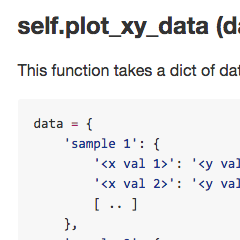

Aggregate results from bioinformatics
analyses across many samples into a single report

Visualise statistics from your pipeline
MultiQC collects numerical stats from each module at the top the report, so that you can track how your data behaves as it proceeds through your analysis.

Plot all of your samples together
Visualizing your samples together allows detailed comparison, not possible by scanning one report after another.

Extensible and documented
Want to use this with your favourite tool? MultiQC is structured to allow easy extension and customisation, with a submodule framework and simple templating. Everything should be well documented, so that the project can grow for the community.
Example Reports
To get an idea of what MultiQC reports look like, have a look at these example reports:
- Simple installation
- Search any directory
- Extensible & well documented